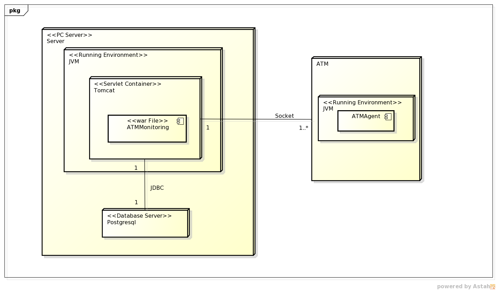

Deployment Diagram¶
The following deployment diagram explains describes the whole production environment of ATMMonitoring:
The artifact ATMMonitoring is a war file that is deployed inside a Servlet Container, in this case a Tomcat server which runs under a standard Java Virtual Machine.
ATMMonitoring communicates with two other nodes: first with the database, this node in the actual configuration is deployed inside the same one that holds the Tomcat server, but it could be it could be in an external one; the other type of communication is made with the external ATMs that have the ATM agent installed.
Diagrams Download¶
This diagram was made using Astah Community Edition 6.8.0/d254c5